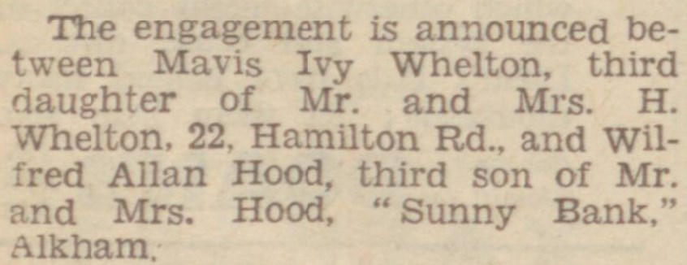
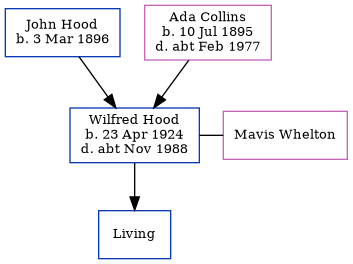

Wilfred Alan Hood 1924 - c1988
[ Home ] | [ Calendar ] | [ Surnames Index ] | [ Errors ] | [ Family History ]An errand boy general grocer and the 2nd of 3 children of John Hood and Ada Collins, Wilfred Hood, the third cousin once-removed on the father's side of Nigel Horne, was born in Elham, Kent, England on 23 Apr 19241,2,3 and. He married Mavis Whelton (with whom he had 1 surviving child, ) in Dover, Kent, England around Feb 19484. On 29 Sept 1939, he was living at Elvington Cottage, Newington, Kent1.
He died c. Nov 1988 in Dover3.
Parents
- John H was born on 3 Mar 1896
- Ada Mary was born on 10 Jul 1895
Citations
- 1939 Register - Findmypast (was the son of the head of the household)
- England & Wales births 1837-2006 - Findmypast
- England & Wales deaths 1837-2007 - Findmypast
- England & Wales Marriages 1837-2005 - Findmypast
Media
Dover Express - August 8, 1947

England & Wales deaths 1837-2007 Transcription - BMD-D-1988-10-76754557
England & Wales marriages 1837-2008 Transcription - BMD-M-1948-1-AZ-000680-096
England & Wales births 1837-2006 - BMD/B/1924/2/AZ/000644/079
1939 Register - TNA/R39/1824/1824E/009/43
Family Tree
Map
Generated by ged2site. Last updated on Jul 3, 2024